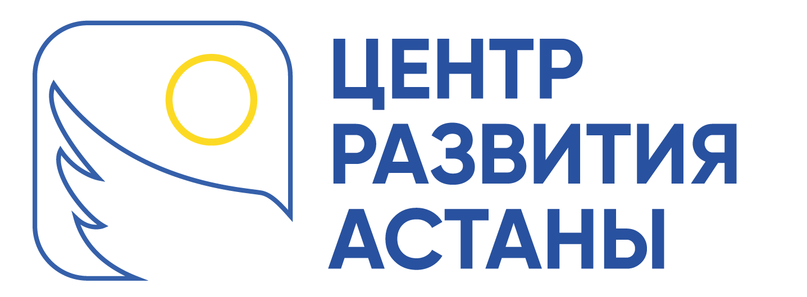
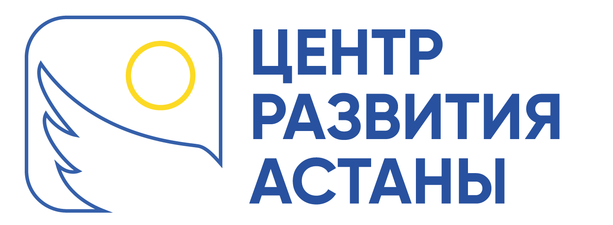

Green Clinic
Green clinic- это многопрофильный медицинский центр, общей площадью 10 700 кв. м., предоставляющий доступную высококачественную медицинскую помощь населению, и возможность пройти полное обследование у врачей различного профиля, так же при необходимости, получить лечение в стационаре (провести операцию по бесплатной квоте), по лучшим международным стандартам и технологиям.

+7 (771) 103-01-43 - связь с доктором
Бариатрическая хирургия
Показания и противопоказания к бариатрическим операциям
Бариатрическая хирургия доступна не всем людям.
Основным условием для назначения операции является ожирение 3 степени – морбидное ожирение.
Этот тип характеризуется индексом массы тела ИМТ выше 40.
ИМТ — величина, которая помогает оценить соотношение веса и роста человека. Определяется как масса в
килограммах деленная на рост в метрах в квадрате.
Если ИМТ менее 40 операция может быть показана при наличии любых заболеваний, вызванных ожирением (например,
сахарного диабета 2 типа).
Другие условия при которых возможна операция:
- возраст от 18 до 65 лет;
- безрезультатные диеты;
- физическая активность и прием медикаментов для похудения в прошлом;
- реалистичные представления об операции, ее рисках и результатах;
- мотивация к похудению после бариатрии и готовность следовать рекомендациям врача.
Бариатрические операции противопоказаны при:
- ИМТ меньше 30;
- Беременности или сопутствующих заболеваниях;
- Циррозе печени;
- Аутоиммунных болезней.
Врач может отменить вмешательство, если за 3 месяца до него пациент набрал вес или продолжил курить.
Видимый результат уже через месяц!
Забудьте о мучительных диетах и осложнениях в виде гастрита. Хирургические процедуры профессора Оспанова
гарантируют не только снижение веса до нормального уровня, но и здоровья для всего организма
Ожирение определяется мировым медицинским сообществом как хроническое обменное заболевание. Поэтому для
лечения тяжелых случаев болезни необходимы радикальные методы. Речь идет о бариатрической хирургии.
Бариатрия — подвид хирургии, которая специализируется на лечении ожирения. Бариатрические
манипуляции помогают уменьшить объем желудка и скорректировать обменные процессы.
В результате человек насыщается меньшим количеством пищи и получает из еды больше энергии.
Оперативное лечение в условиях многопрофильного стационара “Green clinic” это:
- высокий уровень безопасности, с соблюдением требований санитарно-эпидемиологической безопасности и требований стандарта по безопасному пребыванию пациентов в медицинском учреждении;
- квалифицированный и внимательный медицинский персонал;
- новейшее европейское оборудование;
- комфортабельные условия пребывания;
- предоперационный check-up за один день.
Виды проводимых операций:
- авторский метод - лапароскопическое одномоментное минигастрошунтирование с фундопликацией (выключенной частью желудка) фундорингмгш.
- лапароскопическая продольная (рукавная), слив-резекция желудка
- лапароскопическое мини-шунтирование
- лапароскопическое желудочное шунтирование по ру
- лапароскопическое бандажирование желудка.
Высокий уровень безопасности, с соблюдением требований и стандартов санитарно-эпидемиологической безопасности
- квалифицированный и внимательный медицинский персонал;
- новейшее европейское оборудование;
- комфортабельные условия пребывания;
- предоперационный check-up за один день.
Данные виды лечений проводятся как платно, так и бесплатно в рамках осмс. виды проводимых операций.
Эндокринные заболевания
- УЗЛОВОЙ И ДИФФУЗНО - УЗЛОВОЙ ЗОБ;
- ГИПЕРПАРАТИРЕОЗ;
- ТИМОМЫ;
- ДОБРОКАЧЕСТВЕННОЕ ОБРАЗОВАНИЕ НАДПОЧЕЧНИКОВ;
- ОПЕРАТИВНОЕ ЛЕЧЕНИЕ;
- ТЕРИОДЭКТОМИЯ, ГЕМИТЕРИДЭКТОМИЯ, ПАРАТЕРИОДЭКТОМИЯ;
- ИННОВАЦИОННЫЕ МЕТОДЫ;
- ЭНДОСКОПИЧЕСКАЯ ГЕМИТЕРИОЙДЭКТОМИЯ;
- ТОРОКОСКОПИЧЕСКАЯ ТИМЭКТОМИЯ, ЛАПАРОСКОПИЧЕСКАЯ АДРЕНАЛЭКТОМИЯ.
ЗАБОЛЕВАНИЯ ПИЩЕВОДА
- ГЭРБ
- ГПОД
- АХАЛАЗИЯ КАРДИИ
- ДИВЕРТИКУЛЫ ПИЩЕВОДА
- РУБЦОВЫЕ СТРИКТУРЫ ПИЩЕВОДА
ЗАБОЛЕВАНИЯ ЖЕЛУДКА
- КАЛЛЕЗНЫЕ ЯЗВЫ С ПЕНЕТРАЦИЕЙ
- РУБЦОВЫЙ СТЕНОЗ ПРИВРАТНИКА
- ДОБРОКАЧЕСТВЕННЫЕ ОПУХОЛИ ЖЕЛУДКА
- МОРБИДНОЕ ОЖИРЕНИЕ
ЗАБОЛЕВАНИЯ ПЕЧЕНИ ЖЕЛЧНОГОПУЗЫРЯ И ПОДЖЕЛУДОЧНОЙ ЖЕЛЕЗЫ
- ЖКБ
- ПОЛИПОЗ ЖЕЛЧНОГО ПУЗЫРЯ
- ПРОСТЫЕ И ПАРАЗИТАРНЫЕ КИСТЫ ПЕЧЕНИ
- РУБЦОВЫЕ СТРИКТУРЫ ЖЕЛЧНЫХ ПРОТОКОВ
- ВИРСУНГОЛИТИАЗ
- КИСТЫ ПОДЖЕЛУДОЧНОЙ ЖЕЛЕЗЫ
- ОПЕРАТИВНОЕ ЛЕЧЕНИЕ
- ЭХИНОКОККЭКТОМИЯ И ПЕРИЦИСТЭКТОМИЯ
- ИННОВАЦИОННЫЕ МЕТОДЫ
- ЛАПАРОСКОПИЧЕСКАЯ ЭХИНОКОККЭКТОМИЯ
- ЛАПАРОСКОПИЧЕСКАЯ ЦИСТОЕЮНОСТОМИЯ
- ЛАПАРОСКОПИЧЕСКАЯ ХОЛЕЦИСТЭКТОМИЯ
- ГРЫЖИ РАЗЛИЧНОЙ ЛОКАЛИЗАЦИИ
- ГРЫЖЕСЕЧЕНИЕ С АЛЛОПЛАСТИКОЙ
- ЛАПАРОСКОПИЧЕСКАЯ ГЕРНИОПЛАСТИКА ПРИПАХОВЫХ ГРЫЖАХ И ГРЫЖАХ ПЕРЕДНЕЙБРЮШНОЙ СТЕНКИ
- КОЛОПРОКТОЛОГИЯ
- ДОЛИХОСИГМЫ
- МЕГАКОЛОНЫ
- ВЫПАДЕНИЕ ПРЯМОЙ КИШКИ
- СВИЩИ ТОЛСТОЙ КИШКИ И ПАРАРЕКТАЛЬНОЙ ОБЛАСТИ
- ГЕМОРРОЙ
- ОПЕРАТИВНОЕ ЛЕЧЕНИЕ
- ЗАКРЫТИЕ СВИЩЕЙ ТОЛСТОЙ И ТОНКОЙ КИШКИ ЛЮБОЙСЛОЖНОСТИ
- ИННОВАЦИОННЫЕ МЕТОДЫ
- ЛАПАРОСКОПИЧЕСКАЯ ГЕМИКОЛЭКТОМИЯ
- ЛАПАРОСКОПИЧЕСКАЯ РЕКТОПЕКСИЯ
- ГЕМОРРОЙЭКТОМИЯ С ИСПОЛЬЗОВАНИЕМ УЛЬТРОЗВУКОВОГОДИССЕКТОРА
- Врач высшей категории по терапии
- Врач высшей категории по общественному здравоохранению
- более 30 лет практики, хирург общий, абдоминальный, бариатрический
- доктор медицинских наук
- профессор
- академик европейской академии естественных наук (еаен)
- руководитель «центра хирургии ожирения и сахарного диабета» клиники “green clinic”
- президент роо «казахстанское общество бариатрических и метаболических хирургов — кобимх»
- член генерального совета всемирной федерации по лечению морбидного ожирения и метаболических нарушений (ifso)
Кандидат медицинских наук
Опыт работы более 27 лет
Хирург общий, абдоминальный онколог
Колопроктолог
Врач высшей квалификационной категории